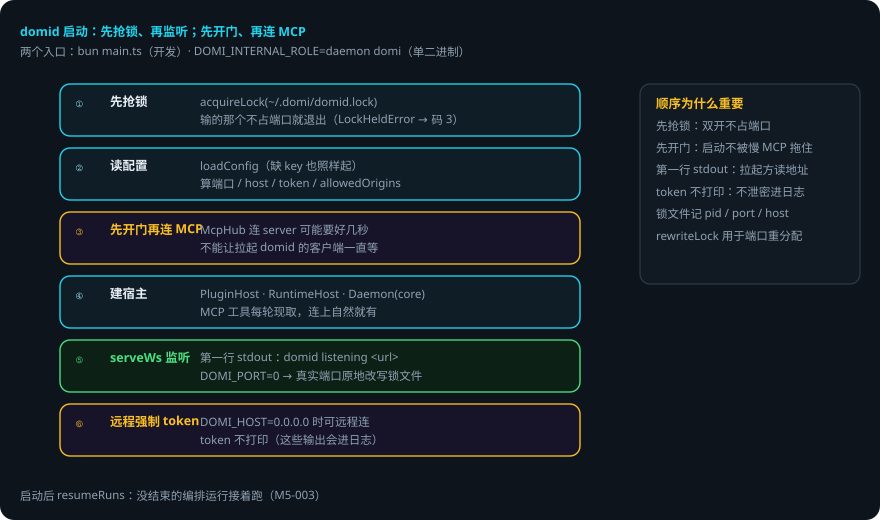
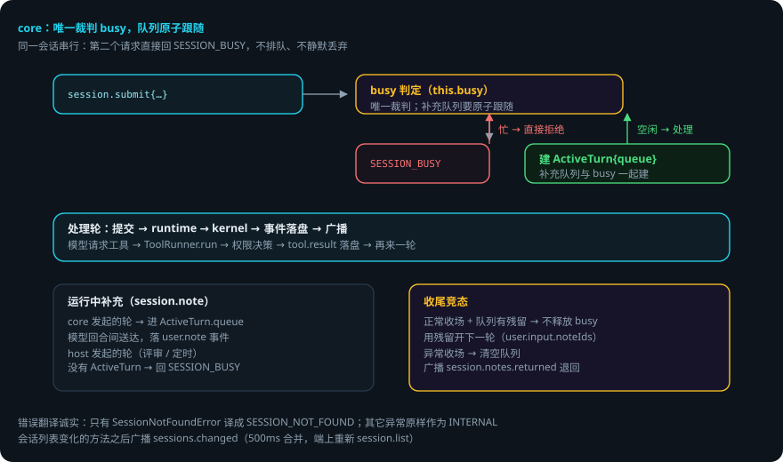

DOMI · DOCS
daemon 内部机制
本页回答四个问题：domid 启动时先做什么？core 怎么分发请求？同一会话为什么串行？出错了会怎样？
packages/daemon—— 进程宿主。客户端全部经 Domi Protocol 访问它，它是事件流的唯一写入者。 贯穿例子：给登录接口加限流——你按了发送，请求从终端到 domid 再到会话，全程经过 core。
先说结论
- 启动顺序有讲究：先抢锁、再监听；先开门、再连 MCP。
- 两个入口：
bun packages/daemon/src/main.ts（开发），或单二进制里DOMI_INTERNAL_ROLE=daemon domi。 - core 只管分发与串行，传输（WS / stdio）在 transport 层——并发正确性只在一个地方证明。
- 同一会话串行：第二个请求直接回
SESSION_BUSY，不排队、不静默丢弃。 - 运行中补充的队列在 core：为每个轮建
ActiveTurn，「忙不忙」的裁判是 core 的busy。 - 远程可连时强制 token；token 不打印（这些输出会进日志）。
用到的词
| 词 | 意思 |
|---|---|
| core | daemon 的 JSON-RPC 分发与串行调度。 |
| transport | 传输层：搬字节（WS / stdio），不归 core 管。 |
| ActiveTurn | core 为每个轮建的运行状态（含补充队列）。 |
| 补充 | 轮进行中用户追加的内容（session.note）。 |
| 锁文件 | ~/.domi/domid.lock：防两个 domid 同时跑。 |
1. 启动顺序

main.ts 的启动顺序，每一步都有理由：
- 先抢锁、再监听：
acquireLock(~/.domi/domid.lock)——两个同时启动的进程里输的那个不会先占端口才发现自己不该起（LockHeldError→ 退出码 3）。 - 读配置（缺 key 也照样起）、定 domid 自己的语言、算 server 设置（端口 / host / token / allowedOrigins）。
- 先开门再连 MCP：
McpHub连 server 可能要好几秒（各自超时），不能让拉起 domid 的客户端一直等；工具每轮现取，连上之后自然就有了。 - 建
PluginHost（沙箱 / 无沙箱）、RuntimeHost（把每个 DomiSession 接到 core 上）、Daemon（core）。 serveWs监听。第一行 stdout 是domid listening <url>——拉起它的客户端读这一行拿地址。DOMI_PORT=0时拿到真实端口后原地改写锁文件。- 远程可连（
DOMI_HOST=0.0.0.0）时强制 token；token 不打印（这些输出会进日志）。
2. core：分发与串行（无传输细节）
core 进来的是 JSON-RPC 请求对象、出去的是响应对象；WS 还是 stdio 由 transport-ws.ts 负责。这样拆是因为并发与顺序的正确性只能在一个地方证明——两套传输不需要两套调度。
两条硬规则：
- daemon 是事件流的唯一写入者。客户端只提交意图。
- 同一会话串行。第二个请求进来不排队也不静默丢弃，直接回
SESSION_BUSY。

关键点：
DaemonHost接口：core 只认这个接口（测试注入假的），生产实现是runtime-host.ts的RuntimeHost。- 错误翻译：只有
SessionNotFoundError会翻译成SESSION_NOT_FOUND；其它异常（配置坏了、库打不开）原样作为INTERNAL——把一切打不开都说成「没有这个会话」，用户会去找一个本来就存在的东西。 - 会话列表变化的方法（create / delete / restore / rename / branch / toTask / task.create / review.start / schedule.runNow）之后广播
sessions.changed。 - 运行中补充的队列在 core（M13 取舍-1）：core 为每个由它发起的轮建
ActiveTurn { queue, ac }。「会话忙不忙」的唯一裁判是 core 的busy，队列要跟这个判断原子地一起做，否则有两个窗口会丢补充。host 自己发起的轮（评审会话、定时任务节点）没有 ActiveTurn，session.note回SESSION_BUSY。 - 收尾的竞态：正常收场（
stopReason === 'completed'）时队列还有残留 → 不释放 busy，用残留开下一轮（user.input.noteIds带上）；异常收场 → 清空队列并广播session.notes.returned。
3. runtime-host：真宿主
- 每个会话一个
DomiSession，共用同一个 SQLite 文件（~/.domi/events.db）；会话列表由宿主自己的一条连接读。 - 权限询问经 core 推给客户端（
session.ask），由任一客户端回答（session.answer）。没有客户端在线时任务就停在询问上等——「断开不影响任务」：执行一个需要确认的操作，本来就该等人，而不是替人答。 extraTools每轮现取：MCP 工具 + 插件工具（停用插件带的 MCP server 已连上的工具在此滤掉，启停即时生效）。- daemon 启动后调
resumeRuns：没结束的编排运行接着跑。
4. 调度器与定时任务
scheduler.ts + cron.ts：5 段 cron（分 时 日 月 周，支持 * , - / 与英文缩写；不支持 L W # 与秒），时区用 Intl 换算不引依赖。调度器在 domid 进程里跑，时钟与定时器都注入（测试用假时钟）；每次醒来对每个计划看「不晚于现在的最近应触发时刻」是否晚于 last_due，是就触发一次（错过多个周期也只补这一次）。应触发时刻之后 60 秒内算准点，超过算 late（domid 没开、机器睡着了）。详见定时任务。
5. 出错了怎么办：限流第 2 步进行中，你按了「发送」想追加一句话
- 会话正忙。core 的
busy为真 → 你的session.submit直接回SESSION_BUSY。不排队、不静默丢弃——你看到明确错误，知道没发出去。 - 运行中补充。你走
session.note（不是 submit）→ 进ActiveTurn.queue，本轮模型回合间送达，落user.note事件。 - 正常收场时队列有残留。不释放 busy，用残留开下一轮（
user.input.noteIds带上）——你的补充不会丢。 - 异常收场。清空队列并广播
session.notes.returned——端上把你的补充退回来。 - 两个 domid 同时启动。输的那个
LockHeldError→ 退出码 3，不占端口。 - daemon 重启。
resumeRuns把没结束的编排运行接着跑；事件全在库里。
一张表看全部情况
| 情况 | domi 做什么 | 你要做什么 |
|---|---|---|
| 会话忙（你 submit） | 回 SESSION_BUSY | 稍后再试 |
| 会话忙（你 note） | host 发起的轮：回 SESSION_BUSY；core 发起的轮：进 ActiveTurn.queue | 不用管 |
| 正常收场有残留补充 | 不释放 busy，用残留开下一轮 | 不用管 |
| 异常收场 | 清空队列，广播 session.notes.returned | 重新提交补充 |
| 双开 domid | 输的退出码 3 | 不用管 |
| daemon 重启 | resumeRuns 续跑未结束的编排 | 不用管 |
6. 可靠性靠什么
- 先抢锁再监听。双开时输的那个在占端口前就退出。
- 先开门再连 MCP。启动不被慢 MCP 拖住。
- 串行在一个地方证明。core 唯一裁判 busy，队列原子跟随。
- 错误翻译诚实。只有会话不存在才说 SESSION_NOT_FOUND，其它异常如实报 INTERNAL。
- 时钟注入。调度器测试用假时钟，时间逻辑可确定性地测。
- 补充不丢。残留队列开下一轮 / 异常退回，两条路都有交代。
已知限制
- 同一会话串行：同一时刻一个会话只处理一个请求。
- host 自己发起的轮（评审、定时任务）没有 ActiveTurn：
session.note回SESSION_BUSY。 - cron 不支持
LW#与秒（5 段）。错过多个周期只补一次。 - token 强制只发生在远程可连时；本地 stdio 不需要。
代码在哪里
| 主题 | 位置 |
|---|---|
| 启动顺序 / 锁 / 端口 | packages/daemon/src/main.ts |
| JSON-RPC 分发与串行 | packages/daemon/src/core.ts |
| 会话宿主接线 | packages/daemon/src/runtime-host.ts |
| 锁文件 | packages/daemon/src/lock.ts |
| WS 传输 | packages/daemon/src/transport-ws.ts |
| 调度器 / cron | packages/daemon/src/{scheduler,cron}.ts |
| 鉴权 / token | packages/daemon/src/auth.ts |
测试：packages/daemon/test/（core 单测、transport 测试、调度器测试）。
相关
- 协议方法由 core 分发：Domi Protocol：daemon 与客户端之间的契约。
- 会话的装配与提交：Agent Loop：一轮里发生了什么。
- 定时任务的补触发与错过窗口：定时任务。